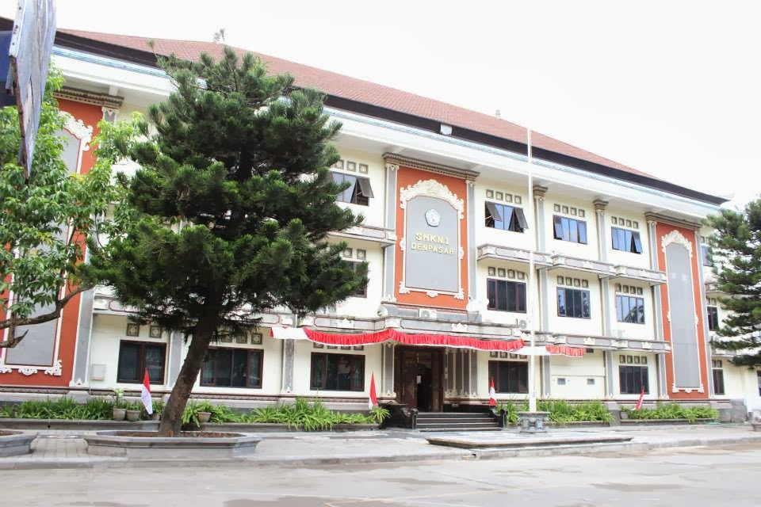

SMK Negeri 1 Global Denpasar dahulu bernama STM Negeri 1 Denpasar berdiri tanggal 24 September 1962 dengan Nomor SK: 17/Djapt/B1/1962 atas prakarsa Pemerintah Tingkat I Bali, dimaksudkan adalah untuk membantu mempercepat pelaksanaan pembangunan di daerah tingkat I Bali. pertama kali memiliki jurusan Mesin dan Bangunan dengan jumlah siswa angkatan pertama hanya 45 orang dengan guru pengajar dari guru ST, SMA, Proyek bandara Ngurah Rai dan Bali Beach Hotel dan Departemen PU dengan lokasi gedung di jalan Gunung Agung Denpasar
Selanjutnya menempati gedung baru di Jalan Hos Cokroaminoto No. 84, Ubung, Denpasar Bali yang diresmikan tanggal 15 April 1977 oleh Menteri Pendidikan dan Kebudayaan Republik Indonesia, Sjarif Thajeb yang selanjutnya menjadi SMK Negeri 1 Denpasar tanggal 24 Maret 1977 dengan Nomor SK: 0537/C4.1/LL/97
Konsentrasi keahlian Produksi Film adalah konsentrasi keahlian dalam Program Keahlian Broadcasting dan Produksi Film.
Konsentrasi keahlian ini melibatkan berbagai aspek yang terkait dengan pembuatan film, seperti penulisan naskah, sinematografi, penyuntingan, desain suara, produksi, dan sebagainya.
Siswa akan memperoleh pengetahuan dan keterampilan yang diperlukan untuk bekerja di industri film.
Dalam konsentrasi keahlian produksi film, siswa akan mempelajari berbagai aspek yang terkait dengan proses pembuatan film.
Berikut ini beberapa bidang utama yang sering dikaji dalam konsentrasi tersebut:
Penulisan Naskah : Anda akan belajar tentang struktur narasi, pengembangan karakter, dialog, dan elemen-elemen penting dalam penulisan naskah film.
Sinematografi : Ini melibatkan pemahaman tentang komposisi visual, pencahayaan, penggunaan kamera, dan teknik pengambilan gambar untuk menciptakan suasana yang diinginkan dalam film.
Penyuntingan : Anda akan mempelajari teknik penyuntingan gambar dan suara untuk mengatur urutan adegan, menghilangkan adegan yang tidak perlu, dan menciptakan ritme yang tepat dalam film.
Desain Suara : Fokus pada penciptaan dan penggunaan elemen suara dalam film, termasuk efek suara, musik, dan mixing audio untuk meningkatkan pengalaman penonton.
Produksi : Ini meliputi pemahaman tentang perencanaan produksi, manajemen anggaran, rekruitmen kru, perizinan lokasi, dan pengawasan umum proses produksi film.